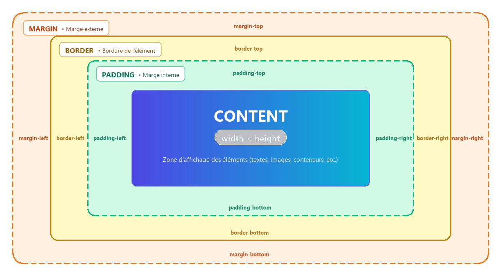

Cette première séance d'informatique en 3ème SI est dédiée à la réactivation
des connaissances acquises en HTML5 et CSS3. Elle pose les bases de la
structuration
sémantique et de la mise en page web avant d'aborder les formulaires avancés et la programmation dynamique en
JavaScript.
🎯 Objectifs d'apprentissage :
Reconnaître et expliquer la structure minimale d'un document HTML5 valide.
Utiliser convenablement les balises de texte (<h1>-<h6>,
<p>) et de groupement (<div>, <span>).
Insérer des médias accessibles (<img> avec attribut alt) et des liens
de navigation (<a>).
Lier et appliquer des feuilles de style externes en respectant la syntaxe des règles
CSS et des sélecteurs.
Maîtriser le modèle de boîte (largeurs, hauteurs, marges internes
padding, bordures et marges externes margin).
Réaliser une fiche de présentation personnelle soignée et personnalisée (Mini-projet 1).
Aperçu du mini-projet à réaliser en fin de séance : la fiche de présentation personnelle
Langage HTML5
Structure d'une page Web
Tout document web moderne doit respecter le squelette HTML5 minimal suivant :
Expliquez le rôle de chacune des lignes du code précédent avant de consulter la réponse.
Afficher l'explication détaillée de chaque balise
<!DOCTYPE html>
Indique au navigateur le standard HTML utilisé. La mention simple html désigne expressément
la version HTML5.
<html lang="fr"> ... </html>
Élément racine englobant l'intégralité du document. L'attribut lang="fr" précise la langue
naturelle du contenu, essentielle pour les lecteurs d'écran (accessibilité) et les moteurs de recherche.
<head> ... </head>
Contient les métadonnées (encodage, viewport, titre de l'onglet, liaisons aux feuilles de style CSS et
scripts externes). Ces informations ne sont pas affichées directement dans le corps de la page.
<body> ... </body>
Le corps du document. Il regroupe tous les éléments visibles à l'écran : textes, images, conteneurs,
liens, etc.
<meta charset="UTF-8">
Définit le jeu de caractères en UTF-8, permettant d'afficher correctement tous les
caractères accentués et alphabets internationaux.
Garantit l'affichage adaptatif (Responsive Design) sur smartphones et tablettes en
ajustant la largeur de rendu à celle de l'appareil sans zoom automatique artificiel.
<title>Document</title>
Indique le titre de la page affiché dans l'onglet du navigateur et dans les résultats des moteurs de
recherche.
Titres, Paragraphes & Mise en forme du texte
1. Hiérarchie des titres (<h1> à <h6>)
<h1>Titre principal (Niveau 1)</h1>
<h2>Titre de section (Niveau 2)</h2>
...
<h6>Sous-titre mineur (Niveau 6)</h6>
Les titres s'échelonnent de <h1> (le plus important, unique par page) jusqu'à
<h6>.
Ce sont des éléments de bloc (ils débutent sur une nouvelle ligne et possèdent une marge verticale par
défaut).
2. Paragraphes de texte (<p>)
La balise <p>...</p> (Paragraph) est un élément de type bloc servant à structurer le texte en paragraphes distincts.
Le navigateur ajoute automatiquement un saut de ligne et une marge verticale (espacement par défaut) avant et après chaque paragraphe.
Règle de syntaxe sémantique : un paragraphe ne peut contenir que du contenu en-ligne (texte, images, balises de style). Il est strictement interdit d'imbriquer un paragraphe à l'intérieur d'un autre paragraphe, ou d'y insérer des éléments de bloc (comme <h1> à <h6> ou <div>).
<p>Le langage HTML permet de structurer le contenu d'une page Web.</p>
<p>Chaque paragraphe commence automatiquement sur une nouvelle ligne avec un espacement régulier.</p>
3. Saut de ligne forcé (<br>)
La balise <br> (Line Break) est une balise orpheline (auto-fermante / vide) de type en-ligne (inline).
Elle provoque un retour immédiat à la ligne au sein d'un même flux de texte, sans créer de nouveau paragraphe et sans introduire de marge verticale supplémentaire.
Cas d'utilisation typiques : adresses postales, coordonnées de contact, strophes d'un poème ou paroles de chanson, où le passage à la ligne fait partie intégrante du texte.
Bonne pratique : ne jamais enchaîner plusieurs <br><br> pour espacer visuellement des éléments. L'espacement vertical doit toujours être géré en CSS via la propriété margin.
<p>
Lycée Secondaire Habib Bourguiba<br>
Avenue de la République<br>
1001 Tunis, Tunisie
</p>
4. Trait de séparation thématique (<hr>)
La balise <hr> (Horizontal Rule / Thematic Break) est une balise orpheline de niveau bloc.
Elle représente une rupture thématique ou une transition entre deux sujets au sein d'une même page ou section.
Par défaut, les navigateurs l'affichent sous la forme d'un trait horizontal gris occupant toute la largeur disponible. Son apparence (couleur, épaisseur, marge) est facilement personnalisable en CSS.
<p>Ce premier paragraphe présente les concepts fondamentaux du balisage.</p>
<hr>
<p>Après cette transition, nous abordons l'application pratique des styles.</p>
5. Balises de mise en forme du texte
HTML5 fournit des balises en-ligne pour enrichir le texte, mettre en valeur des expressions ou leur donner une signification sémantique précise :
Balise
Rôle sémantique & Effet
Exemple de code HTML
Rendu dans le navigateur
<strong>
Importance forte (gras sémantique)
<strong>Attention</strong>
Attention
<b>
Gras purement stylistique (Bold)
<b>Important</b>
Important
<em>
Emphase / accentuation (italique sémantique)
<em>Remarque</em>
Remarque
<i>
Italique stylistique (terme technique, mot étranger)
<i>Software</i>
Software
<ins>
Texte inséré / ajouté (souligné par défaut)
<ins>Nouveau tarif</ins>
Nouveau tarif
<u>
Texte souligné stylistique (Underline)
<u>Texte souligné</u>
Texte souligné
<del>
Texte supprimé / archivé (barré par défaut)
<del>50 DT</del>
50 DT
<s>
Texte barré (information plus d'actualité)
<s>Épuisé</s>
Épuisé
<sup>
Texte en exposant (Superscript)
x<sup>2</sup>, 1<sup>er</sup>
x2, 1er
<sub>
Texte en indice (Subscript)
H<sub>2</sub>O, U<sub>n</sub>
H2O, Un
<mark>
Texte surligné (mise en évidence)
<mark>Résultat clé</mark>
Résultat clé
Conteneurs génériques (div & span)
Contrairement aux balises de texte qui apportent une signification sémantique, les conteneurs génériques sont des éléments neutres servant à regrouper d'autres éléments pour structurer une page ou leur appliquer un style CSS commun :
1. Conteneur de type bloc : <div>
La balise <div>...</div> (division) est un élément de niveau bloc.
Elle commence toujours sur une nouvelle ligne, occupe par défaut toute la largeur disponible et ne possède pas de marges verticales prédéfinies.
Elle constitue la brique fondamentale pour assembler des composants, des cartes (cards), des encadrés ou agencer les sections d'une mise en page.
2. Conteneur de type en-ligne : <span>
La balise <span>...</span> est un élément de niveau en-ligne (inline).
Elle ne provoque aucun saut de ligne et n'occupe strictement que la largeur de son propre contenu.
Elle sert principalement à cibler un mot, une expression ou une valeur au sein d'un paragraphe pour lui appliquer une classe, une couleur ou un style CSS spécifique.
3. Règles d'imbrication
Les conteneurs peuvent être imbriqués sans restriction (par exemple, un <span> au sein d'un <p>, lui-même enveloppé dans un <div>).
<div class="carte-profil">
<h2>Mon Profil</h2>
<p>Je suis un élève passionné par le <span class="important">développement Web</span>.</p>
</div>
Listes ordonnées & non ordonnées
Les listes permettent d'énumérer des éléments sous forme structurée :
1. Listes non ordonnées (à puces) : <ul>
Utilisées lorsque l'ordre des éléments n'a pas d'importance particulière. Chaque élément de la liste est
délimité par <li> (List Item).
La balise <ul> dispose de l'attribut type permettant de
personnaliser la forme de la puce :
type="disc" : disque plein (valeur par défaut : •).
type="circle" : cercle vide (○).
type="square" : carré plein (□).
<!-- Liste avec puces carrées -->
<ul type="square">
<li>HTML5</li>
<li>CSS3</li>
<li>JavaScript</li>
</ul>
<!-- Liste avec cercles évidés -->
<ul type="circle">
<li>Algorithmique</li>
<li>Bases de données SQL</li>
</ul>
2. Listes ordonnées (numérotées) : <ol>
Utilisées pour des étapes, des classements ou des procédures ordonnées. La balise <ol>
dispose de 3 attributs clés :
type="i" : chiffres romains minuscules (i, ii, iii...)
type="I" : chiffres romains majuscules (I, II, III...)
start : fixe la valeur numérique de départ (ex: start="5"
commence à 5 ou 'e' ou 'V').
reversed : attribut booléen qui inverse l'ordre de numérotation (compte à
rebours : 3, 2, 1).
<!-- Liste avec chiffres romains débutant à 3 -->
<ol type="I" start="3">
<li>Conception de la maquette</li>
<li>Codage HTML/CSS</li>
<li>Tests et validation</li>
</ol>
<!-- Compte à rebours inversé -->
<ol reversed>
<li>Décollage !</li>
<li>Mise à feu</li>
<li>Préparation</li>
</ol>
3. Listes imbriquées
Une liste peut être imbriquée à l'intérieur d'un élément <li> pour créer des sous-niveaux
:
rowspan="n" (Row Span) : fusionne verticalement n lignes d'une
même colonne.
<td rowspan="2">Cellule fusionnant 2 lignes</td>
Médias (Images, Audio & Vidéo)
HTML5 offre des balises natives pour intégrer du contenu multimédia riche sans recourir à des plugins
externes :
1. Images : <img>
<img src="images/photo.jpg" alt="Portrait de l'élève en tenue de lycée" width="300" height="200">
src : chemin d'accès vers le fichier image (relatif ou absolu).
alt : texte alternatif descriptif (accessibilité pour malvoyants et moteurs de recherche).
width / height (optionnels) : dimensions d'affichage de l'image en pixels.
2. Fichiers Audio : <audio>
La balise <audio> intègre un lecteur sonore natif dans la page :
a. Syntaxe simple (avec attribut src direct) :
<audio src="sons/musique.mp3" controls>
Votre navigateur ne prend pas en charge l'élément audio.
</audio>
b. Syntaxe multi-sources (avec balise <source> pour compatibilité maximale)
:
Pour proposer plusieurs formats de secours (ex: MP3 et OGG) selon les navigateurs :
<audio controls>
<source src="sons/musique.mp3" type="audio/mpeg">
<source src="sons/musique.ogg" type="audio/ogg">
Votre navigateur ne prend pas en charge l'élément audio.
</audio>
Attributs principaux de l'élément <audio> :
src : chemin d'accès vers le fichier audio (dans la syntaxe simple).
controls : affiche l'interface utilisateur native (bouton lecture/pause, curseur de volume,
temps écoulé). Indispensable pour que le lecteur soit visible.
autoplay : démarre la lecture automatique (souvent restreint par les navigateurs).
loop : répète la lecture en boucle.
muted : coupe le son par défaut.
3. Vidéos : <video>
La balise <video> permet de diffuser des séquences vidéo directement dans le navigateur :
a. Syntaxe simple (avec attribut src direct) :
<video src="videos/presentation.mp4" controls width="640" height="360">
Votre navigateur ne prend pas en charge la lecture de vidéos HTML5.
</video>
b. Syntaxe multi-sources (avec balise <source> et image d'affiche) :
<video controls width="640" height="360" poster="images/affiche.jpg">
<source src="videos/presentation.mp4" type="video/mp4">
<source src="videos/presentation.webm" type="video/webm">
Votre navigateur ne prend pas en charge la lecture de vidéos HTML5.
</video>
Attributs spécifiques à l'élément <video> :
src : chemin d'accès vers le fichier vidéo (dans la syntaxe simple).
controls : affiche les commandes de lecture (lecture/pause, volume, barre temporelle, plein
écran).
width et height : dimensions d'affichage du lecteur vidéo en pixels.
poster="image.jpg" : image affichée avant le déclenchement de la lecture.
autoplay, loop, muted : lecture automatique, boucle et mise en
sourdine.
Liens hypertextes
La balise <a> (Anchor) est l'élément fondamental permettant la navigation entre les pages
Web :
1. Syntaxe de base
<a href="https://monlycee.education.tn" target="_blank">Site officiel du lycée</a>
href (Hypertext Reference) : adresse URL de la page cible ou ressource visée.
target="_blank" (optionnel) : commande l'ouverture du lien dans un nouvel onglet.
2. Types de liens
Les différents types de liens au programme sont :
Lien externe : pointe vers un autre site web sur Internet :
/* Famille de police avec polices de substitution */
font-family: 'Segoe UI', Tahoma, Geneva, Verdana, sans-serif;
/* Taille du texte en pixels, em ou rem */
font-size: 16px;
/* Style : normal, italic ou oblique */
font-style: italic;
/* Épaisseur du trait : normal, bold, ou valeurs 100 à 900 */
font-weight: bold;
/* Alignement : left, right, center ou justify */
text-align: center;
2. Couleurs et Arrière-plans
La couleur s'applique sur le texte via color et sur le fond via background-color :
Nom de couleur :color: red;, color: navy;
Hexadécimal à 6 chiffres (#rrggbb) :color: #4f46e5;
Hexadécimal court à 3 chiffres (#rgb) :color: #0bd; équivalent
à #00bbdd
Format RGB :color: rgb(33, 150, 243);
Format RGBA avec transparence :background-color: rgba(79, 70, 229, 0.2);
(alpha de 0 à 1).
3. Dégradés linéaires en arrière-plan
/* Dégradé diagonal à 45 degrés entre deux teintes */
background: linear-gradient(45deg, #4f46e5, #06b6d4);
Résultat visuel :
Modèle de boîte (Box Model)
En CSS, chaque élément HTML affiché en mode bloc est modélisé sous la forme d'une boîte rectangulaire
constituée de quatre couches concentriques :

Les quatre composantes du modèle de boîte : Content, Padding, Border et Margin
1. Content (Contenu)
Dimensionné par width (largeur) et height
(hauteur), en pixels (px), pourcentages (%) ou cadratins (em).
2. Padding (Marge interne)
Espace transparent entre le contenu et sa bordure. Définit l'aisance à
l'intérieur du bloc.
Mission : Réaliser une page web de présentation personnelle intitulée « Fiche
d'information »
en mobilisant l'ensemble des balises HTML5 et règles CSS3 étudiées lors de cette séance.
Étapes de réalisation guidée :
Préparation du projet :
Créer un dossier nommé miniprojet01.
Créer à l'intérieur les fichiers index.html et style.css, ainsi qu'un
sous-dossier images/.
Rédaction du document HTML5 (index.html) :
Insérer le squelette minimal avec l'encodage UTF-8 et la liaison vers style.css.
Créer un conteneur principal <div class="fiche"> pour délimiter la carte de visite.
Structurer les informations : Titre de niveau 1 pour votre prénom et nom, sous-titre pour la classe
(3STI).
Insérer une photo de profil ou un avatar avec un attribut alt explicite.
Rédiger quelques paragraphes présentant vos centres d'intérêt, vos langages de programmation favoris
et vos ambitions.
Ajouter un lien hypertexte vers votre profil scolaire ou un site de référence.
Stylisation avec CSS3 (style.css) :
Réinitialiser les marges par défaut avec le sélecteur universel *.
Définir une couleur de fond ou un dégradé élégant pour le body.
Appliquer le modèle de boîte sur la classe .fiche : largeur maximale, centrage horizontal
(margin: 40px auto;), bordure arrondie et marge interne confortable (padding).
Harmoniser la typographie (famille de polices, graisses, alignements et couleurs de contraste).
Exemple de mise en page attendue — Le choix de la palette de couleurs et des polices reste libre.